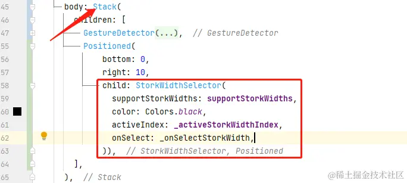
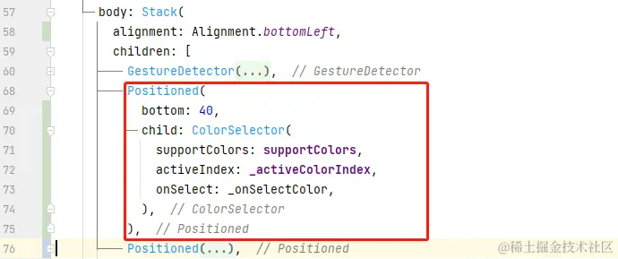
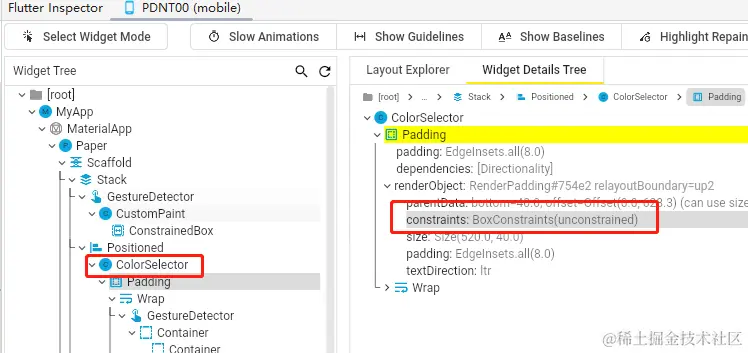
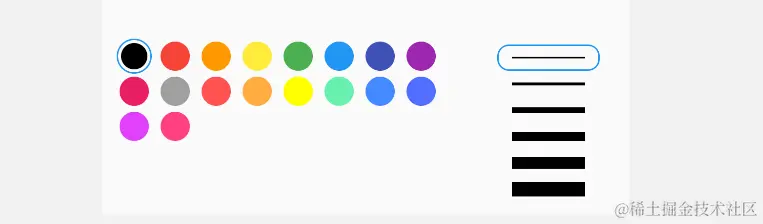
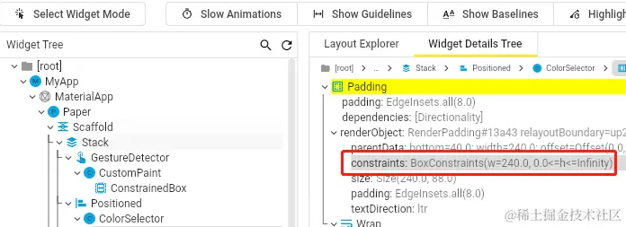
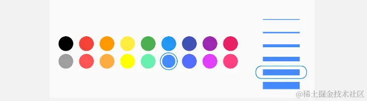
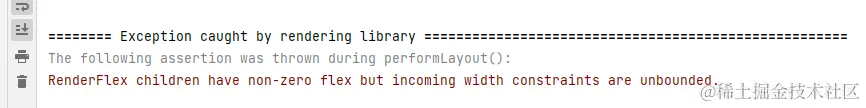

- 01 前言-教程内容导读.md.html
- 02 Flutter 开发环境的搭建.md.html
- 03 新手村基础 Dart 语法 (上).md.html
- 04 新手村基础 Dart 语法 (下).md.html
- 05 Flutter 计数器项目解读.md.html
- 06 猜数字界面交互与需求分析.md.html
- 07 使用组件构建静态界面.md.html
- 08 状态数据与界面更新.md.html
- 09 校验结果与提示信息.md.html
- 10 动画使用与状态周期.md.html
- 11 猜数字整理与总结.md.html
- 12 电子木鱼界面交互与需求分析.md.html
- 13 电子木鱼静态界面构建.md.html
- 14 计数变化与音效播放.md.html
- 15 弹出选项与切换状态.md.html
- 16 用滑动列表展示记录.md.html
- 17 电子木鱼整理与总结.md.html
- 18 白板绘制界面交互与需求分析.md.html
- 19 认识自定义绘制组件.md.html
- 20 通过手势在白板上绘制.md.html
- 21 白板画笔的参数设置.md.html
- 22 撤销功能与画板优化.md.html
- 23 应用界面整合.md.html
- 24 数据的持久化存储.md.html
- 25 网络数据的访问.md.html
- 26 教程总结与展望.md.html
- 捐赠
21 白板画笔的参数设置
1. 线粗选择器
如下所示，左下角可以选择线的粗细，激活状态通过蓝色线框表示。在选择之后，激活状态发生变化，绘制时线的宽度也会变化。这个选择器的构建逻辑相对独立，以后也有复用的可能，可以单独抽离为一个组件维护，这里创建 StorkWidthSelector 组件，并将其通过 Stack 组件叠放在画板之上：
| 线粗 = 1 | 线粗 = 8 |
|---|---|
通过选择器在界面上的展示效果，不难看出组件需要依赖的数据有：
- 支持的线宽列表
List<double> - 激活索引
int - 条目的颜色
Color - 点击条目时的回调
ValueChanged<int>
类定义如下：
class StorkWidthSelector extends StatelessWidget {
final List<double> supportStorkWidths;
final int activeIndex;
final Color color;
final ValueChanged<int> onSelect;
const StorkWidthSelector({
Key? key,
required this.supportStorkWidths,
required this.activeIndex,
required this.onSelect,
required this.color,
}) : super(key: key);
在组件构建逻辑中，主要是便历 supportStorkWidths 列表，通过 _buildByIndex 方法根据索引值构建条目。其中可以通过 index == activeIndex 来确定当前条目是否被激活；再通过激活状态确定是否添加边线：
@override
Widget build(BuildContext context) {
return Padding(
padding: const EdgeInsets.symmetric(horizontal: 8.0, vertical: 8),
child: Column(
crossAxisAlignment: CrossAxisAlignment.end,
children: List.generate(
supportStorkWidths.length,
_buildByIndex,
)),
);
}
Widget _buildByIndex(int index) {
bool select = index == activeIndex;
return GestureDetector(
onTap: () => onSelect(index),
child: Container(
margin: const EdgeInsets.symmetric(horizontal: 2),
width: 70,
height: 18,
alignment: Alignment.center,
decoration: BoxDecoration(
borderRadius: BorderRadius.circular(8),
border: select ? Border.all(color: Colors.blue) : null),
child: Container(
width: 50,
color: color,
height: supportStorkWidths[index],
),
),
);
}
最后通过 Stack + Positioned 组件，将 StorkWidthSelector 组件叠放在界面的右下角；并通过 _onSelectStorkWidth 作为选择的回调处理界面状态数据的变化逻辑：

处理逻辑很简单，只要更新 _activeStorkWidthIndex 激活索引即可；另外在 _onPanStart 创建 Line 对象时，设置激活线宽即可：
void _onSelectStorkWidth(int index) {
if (index != _activeStorkWidthIndex) {
setState(() {
_activeStorkWidthIndex = index;
});
}
}
void _onPanStart(DragStartDetails details) {
_lines.add(Line(
points: [details.localPosition],
// 使用激活线宽
strokeWidth: supportStorkWidths[_activeStorkWidthIndex],
));
}
到这里，就完成了线条宽度的选择功能，当前代码位置 paper 。
2. 颜色选择器
颜色选择器的原理也是一样，选择激活，在创建 Line 对象时设置颜色。只不过是条目的界面表现不同罢了，条目的构建逻辑也是通过 _buildByIndex 实现的。这里通过圆圈也表示颜色，点击时激活条目，激活状态由外圈的圆形边线进行表示：
| 标题 | |
|---|---|
class ColorSelector extends StatelessWidget {
final List<Color> supportColors;
final ValueChanged<int> onSelect;
final int activeIndex;
const ColorSelector({
Key? key,
required this.supportColors,
required this.activeIndex,
required this.onSelect,
}) : super(key: key);
@override
Widget build(BuildContext context) {
return Padding(
padding: const EdgeInsets.symmetric(horizontal: 8.0, vertical: 8),
child: Wrap(
// crossAxisAlignment: CrossAxisAlignment.end,
children: List.generate(
supportColors.length,
_buildByIndex,
)),
);
}
Widget _buildByIndex(int index) {
bool select = index == activeIndex;
return GestureDetector(
onTap: () => onSelect(index),
child: Container(
margin: const EdgeInsets.symmetric(horizontal: 2),
padding: const EdgeInsets.all(2),
width: 24,
height: 24,
alignment: Alignment.center,
decoration: BoxDecoration(
shape: BoxShape.circle,
border: select ? Border.all(color: Colors.blue) : null
),
child: Container(
decoration: BoxDecoration(
shape: BoxShape.circle,
color: supportColors[index],
),
),
),
);
}
}
同理，在 _PaperState 中，颜色选择器也通过 Stack + Positioned 叠放在画板的左下角；点击回调时处理激活颜色索引数据的更新；以及创建 Line 对象时设置激活颜色：

void _onSelectColor(int index) {
if (index != _activeColorIndex) {
setState(() {
_activeColorIndex = index;
});
}
}
void _onPanStart(DragStartDetails details) {
_lines.add(Line(
points: [details.localPosition],
strokeWidth: supportStorkWidths[_activeStorkWidthIndex],
color: supportColors[_activeColorIndex],
));
}
到这里，颜色选择和线宽选择功能就已经实现了，当前代码位置 paper 。但这里在布局上还有些问题，下面来分析处理一下。
3. 布局分析
这里通过 Positioned 将两块分别叠放在 Stack 的两侧，上面颜色少时没有什么问题。但如果颜色过多，可以发现这种方式的叠放会让后者把前者覆盖住
| 多颜色时 | 布局边界 |
|---|---|
在布局树中可以发现，默认情况下 Positioned 之下的约束为无限约束，也就是子组件想要多大都可以。所以子组件在竖直方向上没有约束，颜色太多时就会溢出的原因。

解决方案方案有很多，其中最简单的是指定 Positioned 组件的 width 参数，在水平方向施加紧约束。如下所示，可以限制 ColorSelector 的宽度等于 240。 ColorSelector 内部通过 Wrap 进行构建，在区域之内会自动换行：

Positioned(
bottom: 40,
width: 240,
child: ColorSelector(
supportColors: supportColors,
activeIndex: _activeColorIndex,
onSelect: _onSelectColor,
),
),
通过布局查看器可以看出，此时 ColorSelector 受到的约束宽度就固定在 240。

另外，我们还可以将 Positioned 提供的约束尺寸设为屏幕宽度，通过 Row 来水平排列，其中 ColorSelector 的宽度通过 Expanded 延展成剩余宽度。当前代码位置 paper

Positioned(
bottom: 0,
width: MediaQuery.of(context).size.width,
child: Row(
children: [
Expanded(
child: ColorSelector(
supportColors: supportColors,
activeIndex: _activeColorIndex,
onSelect: _onSelectColor,
),
),
StorkWidthSelector(
supportStorkWidths: supportStorkWidths,
color: supportColors[_activeColorIndex],
activeIndex: _activeStorkWidthIndex,
onSelect: _onSelectStorkWidth,
),
],
),
),
如果这里不提供 width ，而使用 Row + Expanded 组件的话，就会报错；根本原因是 Positioned 施加了无限约束，而 Row 使用了 Expanded 组件，延展无限的宽度区域是不被允许的：

通过这个小问题，带大家简单认识一下布局中约束的分析。很多布局上的问题，都可以从约束的角度解决。这里点到为止，如果对约束感兴趣，或有很多布局的困扰，可以研读一下我的布局小册: Flutter 布局探索 - 薪火相传
4. 本章小结
本章主要任务是完成白板画笔的参数设置，为用户提供修改颜色和线宽的操作，以便于绘制更复杂多彩的图案。从中可以体会出：新增加一个需求，往往会引入相关的数据来实现功能。比如对于修改颜色的需求，需要引入支持的颜色列表和激活的颜色索引两个数据。所以对于任何功能需求而言，不要只看其表面的界面呈现，更重要的是分析其背后的用户交互过程中的数据变化情况。
下一章，将继续对当前的画板项目进行一些小优化，比如支持回退和撤销回退的功能；以及优化一下点集的收集策略，来尽可能地避免收录过多无用点，减小绘制的压力。
© 2019 - 2023 Liangliang Lee. Powered by gin and hexo-theme-book.